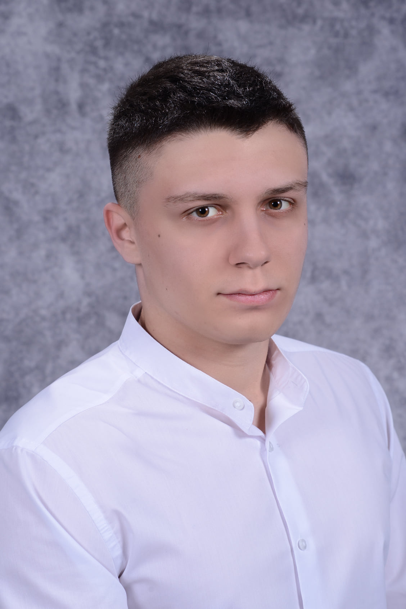
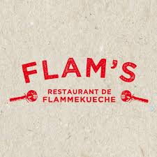
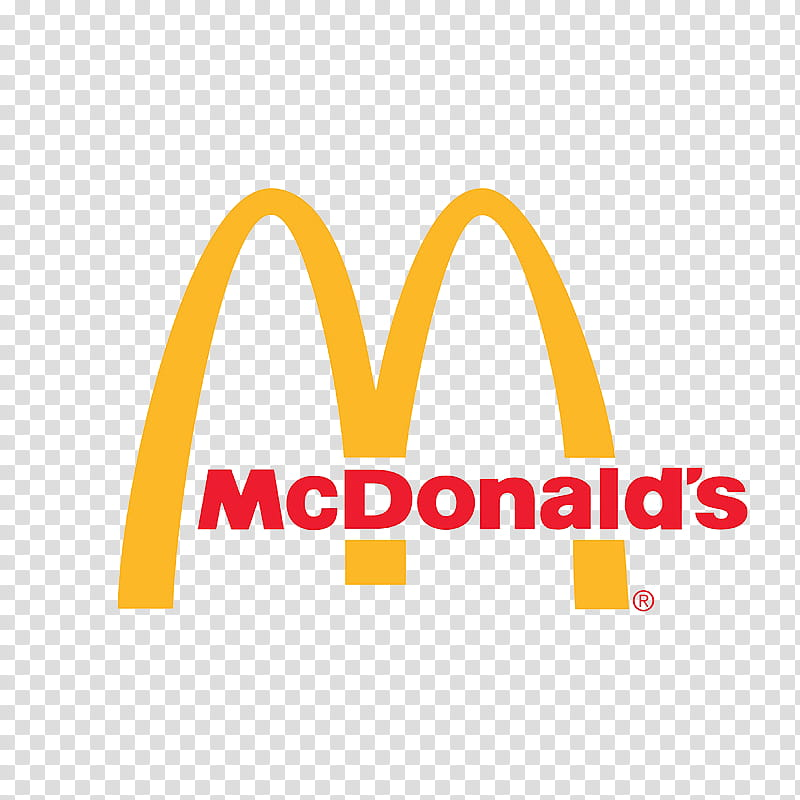
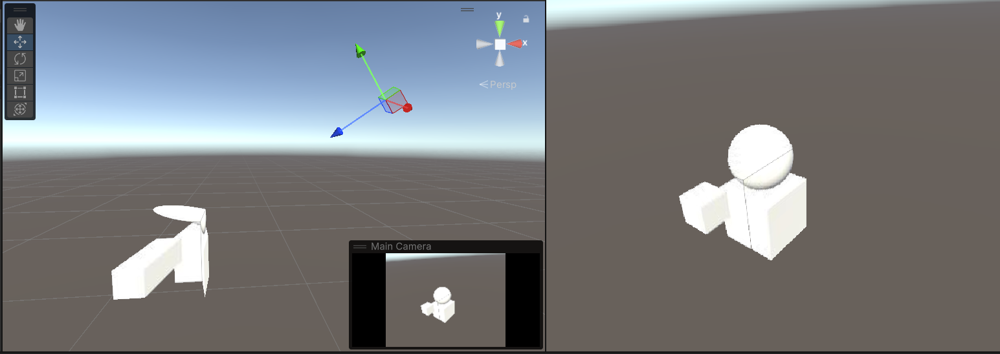
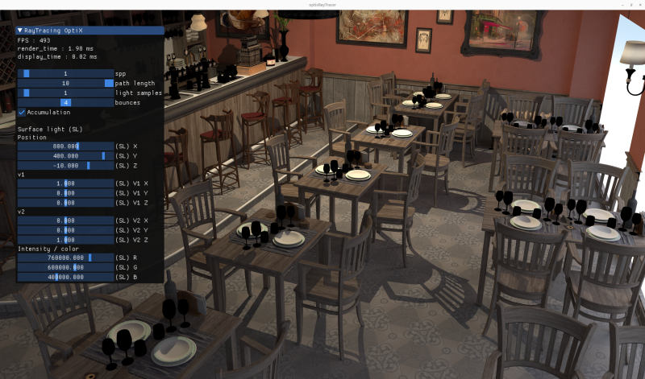
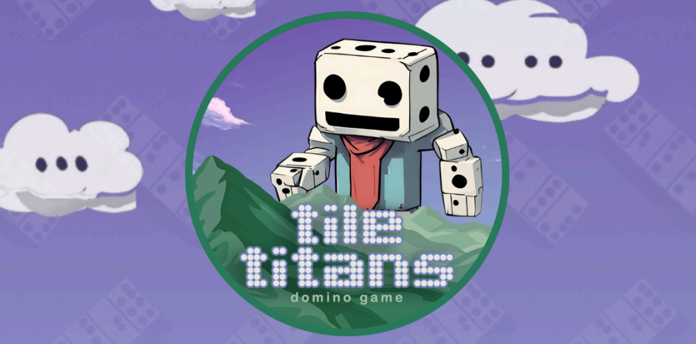
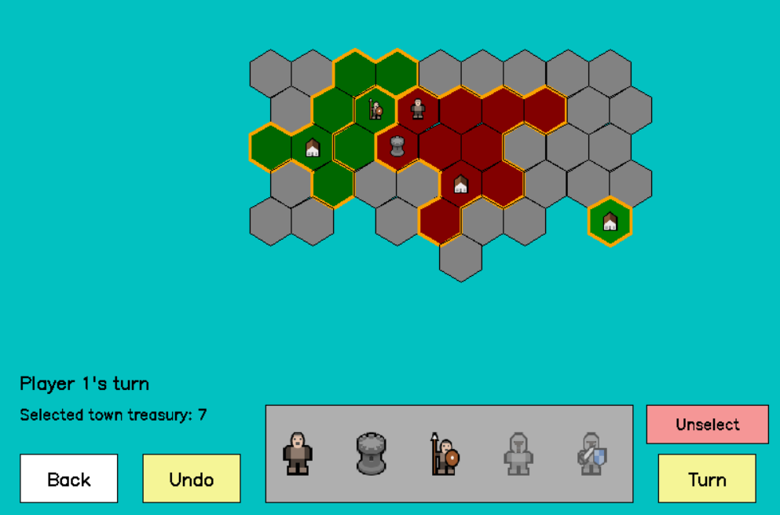
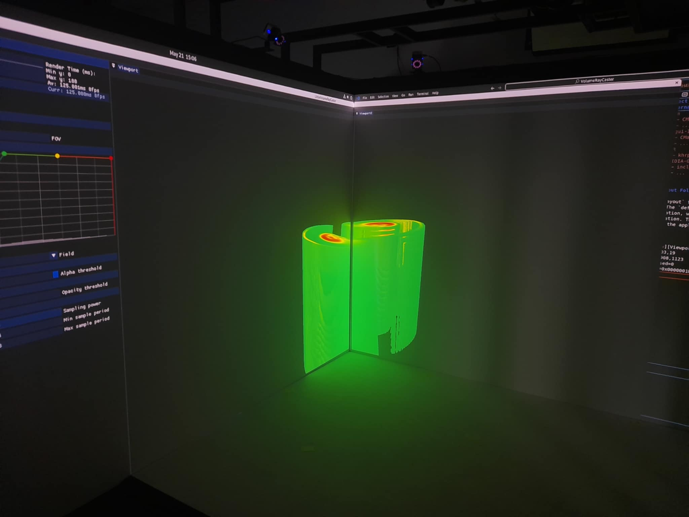

Computer Science Student — Development & 3D Modelling
Master Image & 3D · Université de Strasbourg
Currently at
I'm a Master's student in Image & 3D at the University of Strasbourg, passionate about software development and graphic design. My program covers geometric modelling, virtual reality, rendering, image processing, CAD/CAM, computer vision, and multimedia databases.
I have strong skills in systems and graphics programming — from bare-metal C to real-time rendering with OpenGL and game development with Unreal Engine 5. I also explore machine learning through Python projects and have hands-on research experience in scientific visualisation for immersive environments.
Currently working at Hero, a FinTech company, where I started as a Business Engineer building internal tools and data pipelines, and have since moved to Full Stack Engineer on the Core Banking System team.
I'm trilingual — English C1, French C1, Macedonian native — and comfortable working in international environments.
Hero, Paris, France · FinTech
Hero, Paris, France · FinTech

Flam's Restaurant, Strasbourg, France
Stock management, order management, and team coordination.

McDonald's, Nuremberg, Germany
Order management and customer service.
Université de Strasbourg, France
Specialisation in digital imaging: geometric modelling, virtual reality, rendering, image processing, CAD/CAM, multimedia database management, computer vision, GMCAO, and more.
Université de Strasbourg, France
Lycée 'Rade Jovchevski Korchagin', Skopje, North Macedonia
Unreal Engine 5 / C++ — Game Development
Bourse du Gouvernement Français
Collaborative immersive scientific visualisation system built as part of the CNRS CONTINUUM project (M2 I3D). Ports the JavaScript HoloCube prototype into a reusable Unity package, projecting real-time RGBD streams onto the three visible faces of a virtual cube.
SV_Depth write, and a separate depth-capture shader
GPU path tracer built with NVIDIA OptiX and CUDA as part of the M2 I3D programme. Implements physically-based light transport from scratch.
traceOcclusion
Multiplayer online Domino game built as a group project, with a full client-server architecture (Unity client, C# server with onion + CQRS architecture, MySQL database over TCP/TLS).
My role — UI & game logic:

Turn-based hex strategy game built from scratch in C++17 with SDL2. Inspired by the mobile game Konkr — two players compete over a hexagonal map, managing territories, towns, and units.
FindSDL2_gfx.cmake module
TER research project (M2 I3D) exploring how immersive environments improve scientific visualisation over traditional 2D screens. Combined a literature review of 30+ years of research with a working prototype deployed in the CAVE system at iCube laboratory, Université de Strasbourg.

These are a selection of my main projects. I have worked on many more during my university years, across different languages and technologies — from low-level systems programming in C to database-driven applications in Java and SQL.